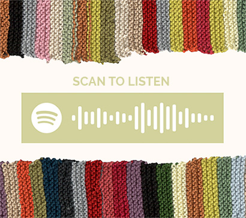

Outside of a strict and structural system, measuring time can be completely arbitrary. We can reimagine time to adhere to the personal and varying aspects of our own lifestyle. My proposal for this project is to incorporate feelings, moods and memories as a way of structuring a timeline.
One of the most common and effective ways to remember or define a specific time in ones like is through the music they listened to at the time. Sound is a very effective sense when it comes to memory, therefore making music one of the core elements that can help someone emerse themselves back into the feeling of a specific moment in time. Colour is another element that can be subjectively connected to the specific sound and feeling of a song, similar to sinesthesia. The idea of my project is to compile a list of my favourite songs of every week in the year (in which I focussed on 2020) and assign a colour for each. By knitting out the pattern of each colour, I've created a visual timeline of my feelings throughout the year. This way, it allows you to see the progression of your mood and experiences through the varying colours and how the colours make you feel!
Along with my knitted calendar, I assembled a small printed booklet which consists of my ideas, photos, and pages of the songs and colours that each line of the calendar represents.
I've also made a playlist of these songs in the order by which the knitted calander follows. You can listen to "A Year in Colour" here on Spotify
